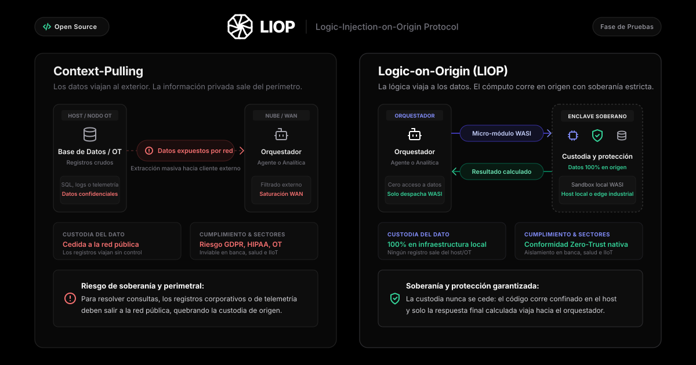

LIOP · Fase 1 (Imagen Landscape)
Fase de Pruebas
1200 × 630 px · Estándar de imagen de alto impacto para el feed de LinkedIn
🇪🇸 ES
🇬🇧 EN
📥 Descargar PNG (@2x Retina - 2400x1260)
📥 Descargar PNG (1200x630)

Texto para el Post (Fase 1 · Español)
📋 Copiar
Primer Comentario Fijado (Con Enlaces)
📋 Copiar
Copiado al portapapeles